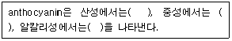
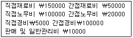

한식조리기능사 (2010-10-03 기출문제)
1과목: 식품위생 및 법규
1. 세균성 식중독의 예방방법으로 적합하지 않은 것은?
- 시설 및 식품을 위생적으로 취급한다.
- 일단 조리한 식품은 빠른 시간 내에 섭취하도록 한다.
- 식품을 냉동고에 보관할 때는 덩어리째 보관하여 사용 시마다 냉동 및 해동을 반복하여 조리한다.
- 식기, 도마 등은 세척과 소독에 철저를 기한다.
(정답률: 96%)

2. 다음 산화방지제 중 사용 제한이 없는 것은?
- L-아스코르빈산나트륨
- 아스코르빌 팔미테이트
- 디부틸히드록시톨루엔
- 이디티에이 2 나트륨
(정답률: 72%)
3. 식품과 독성분의 연결이 틀린 것은?
- 매실 - 베네루핀(venerupin)
- 섭조개 - 삭시톡신(saxitoxin)
- 독버섯 - 무스카린(muscarine)
- 독보리 - 테물린(temuline)
(정답률: 89%)
4. 다음 균에 의해 식사 후 식중독이 발생했을 경우 평균적으로 가장 빨리 식중독을 유발 시킬 수 있는 원인균은?
- 살모넬라균
- 리스테리아
- 포도상구균
- 장구균
(정답률: 73%)
5. 부패된 어류에 나타나는 현상은?
- 아가미의 색깔이 선홍색이다.
- 육질은 탄력성이 있다.
- 눈알은 맑지 않다.
- 비늘은 광택이 있고 점액이 별로 없다.
(정답률: 90%)
6. 식품을 조리 또는 가공할 때 생성되는 유해물질과 그 생성 원인을 잘못 짝지은 것은?
- 엔-니트로소아민(N-nitrosoamine) -육가공품의 발색제 사용으로 인한 아질산과 아민과의 반응 생성물
- 다환방향족 탄화수소(Polycyclic aromatic hydrocarbon) - 유기물질을 고온으로 가열할 때 생성되는 단백질이나 지방의 부해 생성물
- 아크릴아마이드(acrylamide) - 전분식품을 가열시 아미노산과 당의 열에 의한 결합 반응 생성물
- 헤테로고리아민(heterocyclic amines) - 주류제조시 에탄올과 카바밀기의 반응에 의한 생성물
(정답률: 46%)
7. 보존제에 설명으로 옳은 것은?
- 식품에 발생하는 해충을 사멸 시키는 물질
- 식품의 변질 및 부패의 원인이 되는 미생물을 사멸 시키거나 증식을 억제하는 작용을 가진 물질
- 식품 중의 부패세균이나 전염병의 원인균을 사멸시키는 물질
- 곰팡이의 발육을 억제시키는 물질
(정답률: 75%)
8. 세균성 식중독의 가장 대표적인 증상은 ?
- 중추신경마미
- 급성 위장염
- 언어장애
- 시력장애
(정답률: 86%)
9. 우리나라 식품위생법에서 정의하는 식품 첨가물에 대한 설명으로 틀린 것은?
- 식품의 조리과정에서 첨가되는 양념
- 식품의 가공과정에서 첨가되는 천연물
- 식품의 제조과정에서 첨가되는 화학적 합성품
- 식품의 보존과정에서 저장성을 증가시키는 물질
(정답률: 48%)
10. 식품취급자가 손을 씻는 방법으로 적합하지 않은 것은?
- 살균효과를 증대시키기 위해 역성 비누 액에 일반 비누 액을 섞어 사용한다.
- 팔에서 손으로 씻어 내려온다.
- 손을 씻은 후 비눗물을 흐르는 물에 충분히 씻는다.
- 역성 비누원액을 몇 방울 손에 받아 30초 이상 문지르고 흐르는 물로 씻는다.
(정답률: 83%)
11. 소분업 판매를 할 수 있는 식품은?(오류 신고가 접수된 문제입니다. 반드시 정답과 해설을 확인하시기 바랍니다.)
- 전분
- 식용유지
- 식초
- 빵가루
(정답률: 74%)
12. 다음 중 식품위생법에 명시된 목적이 아닌 것은?
- 위생상의 위해를 방지
- 건전한 유통·판매를 도모
- 식품영양의 질적 향상을 도모
- 식품에 관한 올바른 정보를 제공
(정답률: 67%)
13. 집단 급식소란 영리를 목적으로 하지 아니하면서 특정다수인에게 계속하여 음식물을 공급하는 기숙사·학교·병원 그 밖의 후생기관 등의 급식 시설로서 1회 몇 인 이상에게 식사를 제공하는 급식소를 말하는가?
- 30명
- 40명
- 50명
- 60명
(정답률: 88%)
14. 영업신고를 하여야 하는 업종은?
- 단란주점영업
- 유흥주점영업
- 일반음식점영업
- 식품조사처리업
(정답률: 72%)
15. 허위표시, 과대광고 및 과대포장의 범위에 해당하지 않는 것은?
- 허가·신고 또는 보고한 사항과 다른 내용의 표시광고
- 인체의 건전한 성장 및 발달과 건강한 활동을 유지 하는데 도움을 준다는 표현
- 제품의 원재료 또는 성분과 다른 내용의 표시·광고
- 제조연월일 또는 유통기한을 표시함에 있어서 사실과 다른 내용의 표시·광고
(정답률: 86%)
2과목: 식품학
16. 꽁치의 160g의 단백질 양은?(단, 꽁치 100g당 단백질 양 : 24.9g)
- 28.7g
- 34.6g
- 39.8g
- 43.2g
(정답률: 69%)
17. 찹쌀에 있어 아밀로오스와 아밀로펙틴에 대한 설명 중 맞는 것은?
- 아밀로오스 함량이 더 많다.
- 아밀로오스 함량과 아밀로펙틴의 함량이 거의 같다.
- 아밀로펙틴으로 이루어져 있다.
- 아밀로펙틴은 존재하지 않는다.
(정답률: 72%)
18. 아래의 안토시아닌(anthocyanin)의 화학적 성질에 대한 설명에서 ( )안에 알맞은 것을 순서대로 나열한 것은?

- 적색 - 자색 - 청색
- 청색 - 적색 - 자색
- 노란색 - 파란색 - 검정색
- 검정색 - 파란색 - 노란색
(정답률: 80%)
19. 다음 중 천연 항산화제와 거리가 먼 것은?
- 토코페롤
- 스테비아 추출물
- 플라본 유도체
- 고시폴
(정답률: 28%)
20. 전분의 변화에 대한 설명으로 옳은 것은?
- 호정화란 전분에 물을 넣고 가열시켜 전분입자가 붕괴되고 미셀구조가 파괴되는 것이다.
- 호화란 전분을 묽은 산이나 효소로 가수분해 시키거나 수분이 없는 상태에서 160~170℃로 가열하는 것이다.
- 전분의 노화를 방지하려면 호화전분을 0℃이하로 급속 동결 시키거나 수분을 15% 이하로 감소시킨다.
- 아밀로오스의 함량이 많은 전분이 아밀로펙틴이 많은 전분보다 노화되기 어렵다.
(정답률: 60%)
21. 결합수에 대한 설명으로 틀린 것은?
- 용매로 작용한다.
- 100℃로 가열해도 제거되지 않는다.
- 0℃의 온도에서 얼지 않는다.
- 미생물의 번식에 이용되지 못한다.
(정답률: 62%)
22. 다음 중 알칼리성의 식품의 성분에 해당하는 것은?
- 유즙에 칼슘(Ca)
- 생선의 유황(S)
- 곡류의 염소(Cl)
- 육류의 산소(O)
(정답률: 62%)
23. 질긴 부위의 고기를 물속에서 끓일 때 고기가 연하게 되는데, 이에 관여하는 주된 원인 물질은?
- 헤모글로빈
- 젤라틴
- 엘라스틴
- 미오글로빈
(정답률: 58%)
24. 유지의 신선도를 측정하기 위한 수치는?
- 검화값
- 산값
- 요오드값
- 아세틸값
(정답률: 43%)
25. 다음 중 효소가 아닌 것은?
- 말타아제(maltase)
- 펩신(pepsin)
- 레닌(rennin)
- 유당(lactose)
(정답률: 61%)
26. a - amylase에 대한 설명으로 틀린 것은?
- 전분의 a-1.4결합을 가수분해 한다.
- 전분으로부터 덱스트린을 형성한다.
- 발아중인 곡류의 종자에 많이 있다.
- 당화 효소라고 한다.
(정답률: 41%)
27. 과일 잼 가공시 펙틴은 주로 어떤 역할을 하는가?
- 신맛증가
- 구조형성
- 향보존
- 색소보존
(정답률: 73%)
28. 아이코사펜타노익산(EPA : eicosapentanoic acid)과 같은 다가불포화지방산을 많이 함유하고 있는 생선은?
- 고등어
- 갈치
- 조기
- 대구
(정답률: 86%)
29. 신선도가 떨어진 어패류의 냄새 성분이 아닌 것은?
- TMAO(trimethylamine oxide)
- 암모니아(ammonia)
- 황화수소(H2S)
- 인돌(indole)
(정답률: 49%)
30. 다음 동물성 지방의 종류와 급원 식품이 잘못 연결된 것은?
- 라드 - 돼지고기의 지방조직
- 우지 - 소고기의 지방조직
- 마가린 - 우유의 지방
- DHA - 생선기름
(정답률: 64%)
3과목: 조리이론과 원가계산
31. 일반적으로 폐기율이 가장 높은 식품은?
- 쇠살코기
- 계란
- 생선
- 곡류
(정답률: 86%)
32. 비린내가 심한 어류의 조리방법으로 잘못된 것은?
- 정종이나 포도주를 첨가하여 조리한다.
- 물에 씻을수록 비린내가 많이 나므로 재빨리 씻어 조리한다.
- 식초와 레몬즙 등의 신맛을 내는 조미료를 사용하여 조리한다.
- 황화합물을 함유한 마늘, 파 및, 양파를 양념으로 첨가하여 조리한다.
(정답률: 80%)
33. 음식을 제공할 때 온도를 고려해야 한다. 다음 중 맛있게 느끼는 온도가 가장 높은 것은?
- 전골
- 국
- 커피
- 밥
(정답률: 83%)
34. 단맛을 내는 조미료에 속하지 않는 것은?
- 올리고당(oligosaccharide)
- 설탕(sucrose)
- 스테비오사이드(stevioside)
- 타우린(taurine)
(정답률: 74%)
35. 채소를 데칠 때 뭉그러짐을 방지하기 위한 가장 적당한 소금의 농도는?
- 1%
- 10%
- 20%
- 30%
(정답률: 74%)
36. 다음 자료에 의해서 총 원가를 산출하면 얼마인가?

- ￦435000
- ￦365000
- ￦265000
- ￦180000
(정답률: 57%)
37. 묵에 대한 설명으로 틀린 것은?
- 전분의 겔(gel)화를 이용한 우리나라 전통음식이다
- 가루의 10배정도의 물을 가하여 쑨다.
- 전분의 농도는 묵의 질에 영향을 준다.
- 메밀, 녹두, 도토리 등의 가루를 이용하여 만든다.
(정답률: 72%)
38. 양파를 가열 조리시 단맛이 나는 이유는?
- 황화아릴류가 증가하기 때문
- 가열하면 양파의 매운맛이 제거되기 때문
- 알리신이 티아민과 결합하여 알리티아민으로 변하기 때문
- 황화합물이 프로필 메르캅탄(propyl mercaptan)으로 변하기 때문
(정답률: 44%)
39. 김장용 배추포기김치 46kg을 담그려는데 배추 구입에 필요한 비용은 얼마인가? (단, 배추 5통(13kg)의 값은 11960원, 폐기율은 8%)
- 23920원
- 38934원
- 42320원
- 46000원
(정답률: 44%)
40. 어패류에 소금을 넣고 발효 숙성시켜 원료 자체 내 효소의작용으로 풍미를 내는 식품은?
- 어육소시지
- 어묵
- 통조림
- 젓갈
(정답률: 78%)
41. 다음의 냉동 방법 중 얼음결정이 미세하여 조직의 파괴와 단백질 변성이 적어 원상유지가 가능하며 물리적 화학적 품질변화가 적은 것은?
- 침지동결법
- 급속동결법
- 접촉동결법
- 공기동결법
(정답률: 87%)
42. 단체급식에서 생길 수 있는 문제점과 거리가 먼 것은?
- 심리면에서 가정식에 대한 향수를 느낄 수 있다.
- 비용면에서 물가상승시 재료비가 충분하지 않을 수 있다.
- 청결하지 않게 관리할 경우 위생상의 사고 위험이 있다.
- 불특정 인을 대상으로 하므로 영양관리가 안 된다.
(정답률: 71%)
43. 근육의 주성분이며 면역과 관계가 깊은 영양소는?
- 비타민
- 지질
- 단백질
- 무기질
(정답률: 87%)
44. 육류, 채소 등 식품을 다지는 기구를 무엇이라고 하는가?
- 쵸퍼(chopper)
- 슬라이서(slicer)
- 야채절단기(cutter)
- 필러(peeler)
(정답률: 74%)
45. 갈비구이를 하기위한 양념장을 만드는 데 사용되는 양념 중 육질의 연화작용을 돕는 역할을 하는 재료로 짝지어진 것은?
- 참기름, 후춧가루
- 배, 설탕
- 양파, 청주
- 간장, 마늘
(정답률: 83%)
46. 다음 중 식단 작성시 고려해야할 사항으로 옳지 않은 것은?
- 급식대상자의 영양 필요량
- 급식대상자의 기호성
- 식단에 따른 종업원 및 필요기기의 활용
- 한식의 메뉴인 경우 국(찌개), 주찬, 부찬, 주식, 김치류의 순으로 식단표 기재
(정답률: 48%)
47. 다음 중 젤라틴을 이용하는 음식이 아닌 것은?
- 두부
- 족편
- 과일젤리
- 아이스크림
(정답률: 82%)
48. 육류조리에 대한 설명으로 틀린 것은?
- 탕 조리시 찬물에 고기를 넣고 끓여야 추출물이 최대한 용출된다.
- 장조림 조리시 간장을 처음부터 넣으면 고기가 단단해지고 잘 찢기지 않는다.
- 편육 조리시 찬물에 넣고 끓여야 잘익고 고기 맛이 좋다.
- 불고기용으로는 결합조직이 되도록 적은 부위가 적당하다.
(정답률: 73%)
49. 난백의 기포성에 영향을 주는 인자에 대한 설명으로 옳은 것은?
- 난백의 온도가 낮을수록 기포 생성이 용이하다.
- 설탕은 난백의 기포성은 증진되나 안정성이 감소된다.
- 레몬즙을 넣으면 단백질 점도가 저하되어 기포성은 좋아진다.
- 물을 40% 첨가하면 기포성은 저하되고 안정성은 증가된다.
(정답률: 52%)
50. 다음 중 기름의 산패가 촉진되는 경우는?
- 밝은 창가에 보관할 때
- 갈색병에 넣어 보관할 때
- 저온에서 보관할 때
- 뚜껑을 꼭 막아 보관할 때
(정답률: 83%)
4과목: 공중보건
51. 상수를 정수하는 일반적인 순서는?
- 침전→여과→소독
- 예비처리→본처리→오니처리
- 예비처리→여과처리→소독
- 예비처리→침전→여과→소독
(정답률: 55%)
52. 쓰레기 소각처리시 공중보건상 가장 문제가 되는 것은?
- 대기오염과 다이옥신
- 화재발생
- 사후 폐기물 발생
- 높은 열의 발생
(정답률: 92%)
53. 병원체가 세균인 전염병은?
- 전염성 간염
- 백일해
- 폴리오
- 홍역
(정답률: 46%)
54. 자외선의 인체에 대한 내용 설명으로 틀린 것은?
- 살균작용과 피부암을 유발한다.
- 체내에서 비타민D를 생성시킨다.
- 피부결핵이나 관절염에 유해하다.
- 신진대사 촉진과 적혈구 생성을 촉진시킨다.
(정답률: 68%)
55. 심한 설사로 인하여 탈수증상을 나타내는 전염병은?
- 콜레라
- 백일해
- 결핵
- 홍역
(정답률: 84%)
56. 포자형성균의 별균에 알맞은 소독법은?
- 자비소독법
- 저온소독법
- 고압증기멸균법
- 희석법
(정답률: 78%)
57. 다음 중 중간숙주의 단계가 하나인 기생충은?
- 간디스토마
- 폐디스토마
- 무구조충
- 광절열두조충
(정답률: 68%)
58. 굴착, 착암작업 등에서 발생하는 진동으로 인해 발생할 수 있는 직업병은?
- 공업중독
- 잠함병
- 레이노드병
- 금속열
(정답률: 78%)
59. 병원체가 인체에 침입한 후 자각적·타각적 임상증상이 발병할 때까지의 기간은?
- 세대기
- 이환기
- 잠복기
- 전염기
(정답률: 90%)
60. 채소류로부터 감염되는 기생충은?
- 동양모양선충, 편충
- 회충, 무구조충
- 십이지장충, 선모충
- 요충, 유구조충
(정답률: 75%)